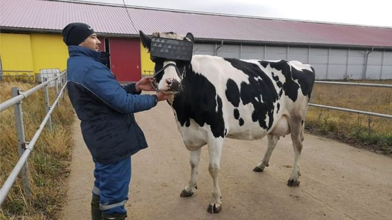

UT Gaming on veebileht, mis toob kokku Tartu Ülikooli arvuti- ja lauamängurid, aidates leida mängukaaslaseid!
27. november 2019
BBC avaldas 27. novembril artikli, millest selgus, et ühes vene talupidamises pandi lehmadele virtuaalreaalsuse prillid ette. Miks seda tehti? Nimelt usuti, et VR-prillidega on võimalik aidata lehmadel toime tulla ärevushäiretega ning seeläbi panustada ka nende piimakvaliteeti. Lehmad nautisid virtuaalreaalsuses nende jaoks spetsiaalselt tehtud "suvepõllu programmi". Esmased uuringutulemused viitasid sellele, et lehmad olid tõepoolest rõõmsamad. Katse leidis aset Moskva lähedal. Jätkatakse pikaajalise mõju uurimist.
21. november 2019
Half-Life'i looja Valve kuulutas üle aastatepikkuse ootuse lõpuks välja uue Half-Life mängu. Tegemist pole siiski Half-Life 3-ga nagu paljud lootsid, vaid ainult VR-ile mõeldud mänguga Half-Life: Alyx, mille sündmustik leiab aset enne mängu Half-Life 2 sündmusi. YouTube'i ilmus ka mängu treilerklipp. Mäng ise tuleb välja järgmise aasta märtsis.
14. november 2019
Legendaarne strateegiamängude saaga Age of Empires on samuti saamas lisa. Viimane Age of Empires mäng ilmus aastal 2005 ning seni ei ole saaga neljanda osa kohta palju teada. Sellegipoolest on leidnud kinnitust, et mäng ilmub vaid Windows 10'le. Entusiastid prognoosivad, et mäng tuleb välja tuleva aasta lõpuks, või isegi veel hiljem.